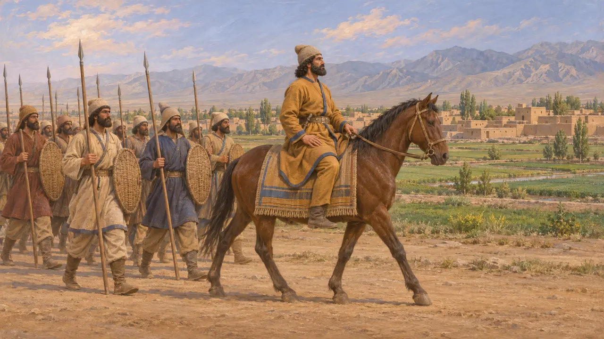
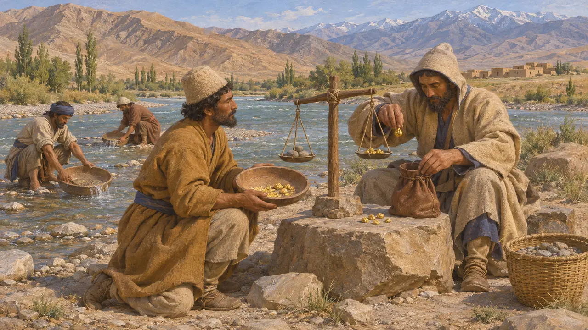
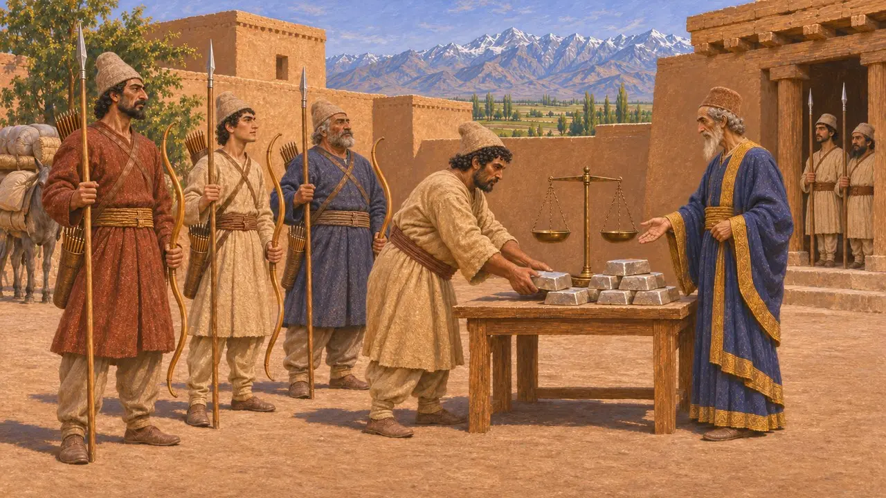
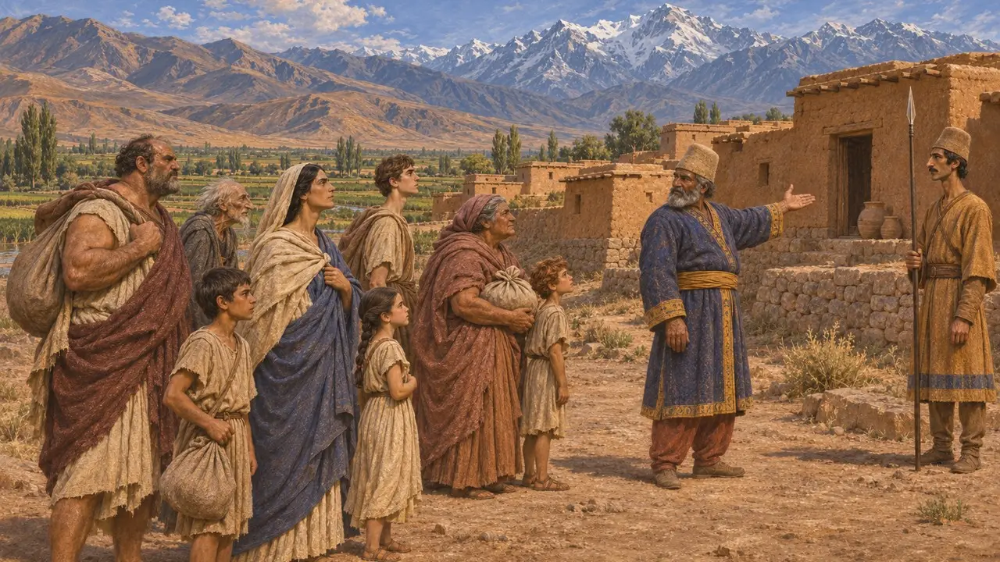
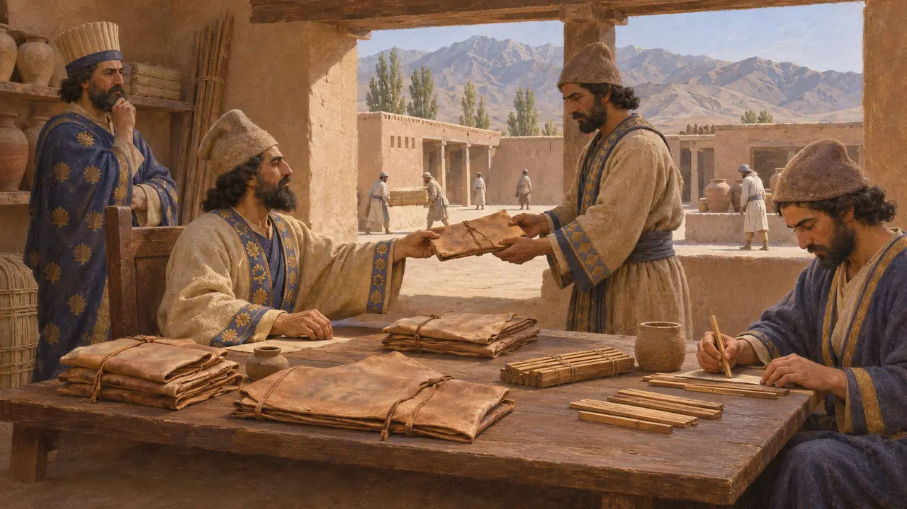

Bactria
The great satrapy of the far north-east, between the Hindu Kush and the Oxus river
Im Spiel: Level 5: Die Gründungsurkunde
Bactria was the fertile land between the Hindu Kush and the Oxus river (the Amu Darya), with its chief city at Bactra, near modern Balkh. Darius lists it among the lands he held, and it was one of the empire's great satrapies, often governed by a royal prince. Its gold went to the palace at Susa, and its men marched in Xerxes' army.
Im Spiel: Bactria is named in the Chronicle's inventions and sources, in the Susa level's building charter, and in the 521 BCE revolts. The Bactrian spearman is its soldier, and the nations list carries its flag.

A land of the King's list
Zeitgenössisch belegtBactria is among the 23 lands Darius names at the start of the Behistun inscription. In the same text its satrap, a Persian whom Darius calls his servant, marches against Frada, the rebel of neighbouring Margiana, and beats him in 521 BCE. Bactria itself is not recorded as rising against Darius.
DB §6, §38

Gold for the palace at Susa
Zeitgenössisch belegtDarius's building charter for his palace at Susa says the gold was brought from Sardis and from Bactria, and the lapis lazuli and carnelian from Sogdiana next door. Bactrian gold may have come from the rivers of the Oxus basin or through trade from further north.
DSf

Tribute and soldiers
Antiker BerichtHerodotus puts the Bactrians, with their neighbours the Aeglians, in the twelfth tribute district, paying 360 talents of silver a year. In Xerxes' army, he says, they wore headgear much like the Medes and carried bows of their native cane and short spears.
Herodotus 3.92, 7.64

The edge of the world for exiles
Antiker BerichtHerodotus tells how Darius settled the captives of Barca in a village in Bactria, which still bore their town's name in his day. Before Lade, he says, the Persians threatened the Ionians that their daughters would be carried off to Bactria. To a Greek it was the far end of the empire.
Herodotus 4.204, 6.9

Letters from a later satrap
Zeitgenössisch belegtA group of Aramaic letters and tallies from Bactria, written on leather and wood in the 4th century, show a satrap's office giving orders to local officials about building, supplies and debts. They come from long after this period, but show the same Aramaic chancery that ran the empire's other satrapies.
J. Naveh and S. Shaked, Aramaic Documents from Ancient Bactria, 2012
Quellen
- DB §6, §38
- DSf
- Herodotus 3.92
- Herodotus 4.204
- Herodotus 6.9
- Herodotus 7.64
- J. Naveh and S. Shaked, Aramaic Documents from Ancient Bactria, 2012
- P. Briant, From Cyrus to Alexander, 2002